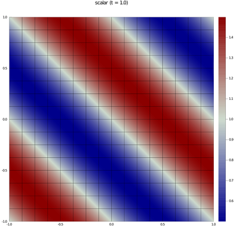

Trixi.jl
Trixi.jl is a numerical simulation framework for hyperbolic conservation laws written in Julia. A key objective for the framework is to be useful to both scientists and students. Therefore, next to having an extensible design with a fast implementation, Trixi is focused on being easy to use for new or inexperienced users, including the installation and postprocessing procedures. Its features include:
- Hierarchical quadtree/octree grid with adaptive mesh refinement
- Native support for 1D, 2D, and 3D simulations
- High-order accuracy in space in time
- Nodal discontinuous Galerkin spectral element methods
- Kinetic energy-preserving and entropy-stable split forms
- Entropy-stable shock capturing
- Positivity-preserving limiting
- Compatible with the SciML ecosystem for ordinary differential equations
- Explicit low-storage Runge-Kutta time integration
- Strong stability preserving methods
- CFL-based and error-based time step control
- Square/cubic domains with periodic and weakly-enforced boundary conditions
- Multiple governing equations:
- Compressible Euler equations
- Magnetohydrodynamics equations
- Hyperbolic diffusion equations for elliptic problems
- Scalar advection
- Multi-physics simulations
- Shared-memory parallelization via multithreading
- Visualization of results with Julia-only tools (Trixi2Img) or ParaView/VisIt (Trixi2Vtk)
Installation
If you have not yet installed Julia, please follow the instructions for your operating system. Trixi works with Julia v1.5.
For users
Trixi and related postprocessing tools are registered Julia packages. Hence, you can install Trixi, the visualization tools Trixi2Vtk and Trixi2Img, and the OrdinaryDiffEq.jl package by executing the following commands in the Julia REPL:
julia> import Pkg
julia> Pkg.add("Trixi"); Pkg.add("Trixi2Vtk"); Pkg.add("Trixi2Img"); Pkg.add("OrdinaryDiffEq")Note that you can copy and paste all commands to the REPL including the leading julia> prompts - they will automatically be stripped away by Julia. The package OrdinaryDiffEq.jl provides time integration schemes used by Trixi.
For developers
If you plan on editing Trixi itself, you have two options: installing it as a dev package or cloning it to a local folder.
Install Trixi as a
devpackage: You can install Trixi as adevpackage by runningjulia> import Pkg julia> Pkg.dev("Trixi")This will download and install Trixi to a designated package development directory (usually
.julia/dev, but you can determine the path on your system withPkg.devdir()). As opposed to using thePkg.addmethod as described above, packages installed viaPkg.devmay have their files edited locally.Install Trixi in a local folder: Alternatively, you can download Trixi locally and use it from within the cloned directory:
git clone git@github.com:trixi-framework/Trixi.jl.git cd Trixi.jl julia --project=@. -e 'import Pkg; Pkg.instantiate()' # Install Trixi's dependenciesThe last line can also be used to update the dependencies if they have changed since you first installed Trixi.
If you installed Trixi this way, you always have to start Julia with the
--projectflag set to your local Trixi clone, e.g.,julia --project=@.
Either way, since the postprocessing tools typically do not need to be modified, it is recommended to install them as normal packages by executing
julia> import Pkg
julia> Pkg.add("Trixi2Vtk"); Pkg.add("Trixi2Img")in the Julia REPL. Likewise, you can install OrdinaryDiffEq.jl as an ordinary package with the following REPL commands:
julia> import Pkg
julia> Pkg.add("OrdinaryDiffEq")Example: Installing Trixi as a package
Please note that the playback speed is set to 3x, thus the entire installation procedure lasts around 45 seconds in real time (depending on the performance of your computer and on how many dependencies had already been installed before).
Usage
In the Julia REPL, first load the package Trixi
julia> using TrixiThen start a simulation by executing
julia> trixi_include(default_example())To visualize the results, load the package Trixi2Img
julia> using Trixi2Imgand generate a contour plot of the results with
julia> trixi2img(joinpath("out", "solution_000040.h5"), output_directory="out", grid_lines=true)This will create a file solution_000040_scalar.png in the out/ subdirectory that can be opened with any image viewer:

The method trixi_include(...) expects a single string argument with the path to a Trixi elixir, i.e.. a text file containing Julia code necessary to set up and run a simulation. To quickly see Trixi in action, default_example() returns the path to an example elixir with a short, two-dimensional problem setup. A list of all example elixirs packaged with Trixi can be obtained by running get_examples(). Alternatively, you can also browse the examples/ subdirectory. If you want to modify one of the elixirs to set up your own simulation, download it to your machine, edit the configuration, and pass the file path to trixi_include(...).
Example: Running a simulation with Trixi
Note on performance: Julia uses just-in-time compilation to transform its source code to native, optimized machine code at the time of execution and caches the compiled methods for further use. That means that the first execution of a Julia method is typically slow, with subsequent runs being much faster. For instance, in the example above the first execution of trixi_include takes about 20 seconds, while subsequent runs require less than 60 milliseconds.
Performing a convergence analysis
To automatically determine the experimental order of convergence (EOC) for a given setup, execute
julia> convergence_test(default_example(), 4)This will run a convergence test with the elixir default_example(), using four iterations with different initial refinement levels. The initial iteration will use the elixir unchanged, while for each subsequent iteration the initial_refinement_level parameter is incremented by one. Finally, the measured $l^2$ and $l^\infty$ errors and the determined EOCs will be displayed like this:
[...]
l2
scalar
error EOC
9.14e-06 -
5.69e-07 4.01
3.55e-08 4.00
2.22e-09 4.00
mean 4.00
--------------------------------------------------------------------------------
linf
scalar
error EOC
6.44e-05 -
4.11e-06 3.97
2.58e-07 3.99
1.62e-08 4.00
mean 3.99
--------------------------------------------------------------------------------An example with multiple variables looks like this:
julia> convergence_test(joinpath(examples_dir(), "2d", "elixir_euler_source_terms.jl"), 3)[...]
l2
rho rho_v1 rho_v2 rho_e
error EOC error EOC error EOC error EOC
8.52e-07 - 1.24e-06 - 1.24e-06 - 4.28e-06 -
6.49e-08 3.71 8.38e-08 3.88 8.38e-08 3.88 2.96e-07 3.85
4.33e-09 3.91 5.39e-09 3.96 5.39e-09 3.96 1.93e-08 3.94
mean 3.81 mean 3.92 mean 3.92 mean 3.90
--------------------------------------------------------------------------------
linf
rho rho_v1 rho_v2 rho_e
error EOC error EOC error EOC error EOC
8.36e-06 - 1.03e-05 - 1.03e-05 - 4.50e-05 -
5.58e-07 3.90 6.58e-07 3.97 6.58e-07 3.97 2.92e-06 3.94
3.77e-08 3.89 4.42e-08 3.90 4.42e-08 3.90 1.91e-07 3.93
mean 3.90 mean 3.93 mean 3.93 mean 3.94
--------------------------------------------------------------------------------Referencing
If you use Trixi in your own research or write a paper using results obtained with the help of Trixi, please cite the following reference:
@online{schlottkelakemper2020purely,
title={A purely hyperbolic discontinuous {G}alerkin approach for
self-gravitating gas dynamics},
author={Schlottke-Lakemper, Michael and Winters, Andrew R and
Ranocha, Hendrik and Gassner, Gregor J},
year={2020},
month={08},
eprint={2008.10593},
eprinttype={arXiv},
eprintclass={math.NA}
}In addition, you can also refer to Trixi directly as
@misc{schlottkelakemper2020trixi,
title={{T}rixi.jl: A tree-based numerical simulation framework
for hyperbolic {PDE}s written in {J}ulia},
author={Schlottke-Lakemper, Michael and Gassner, Gregor J and
Ranocha, Hendrik and Winters, Andrew R},
year={2020},
month={08},
howpublished={\url{https://github.com/trixi-framework/Trixi.jl}},
doi={10.5281/zenodo.3996439}
}Authors
Trixi was initiated by Michael Schlottke-Lakemper and Gregor Gassner (both University of Cologne, Germany). Together with Hendrik Ranocha (KAUST, Saudi Arabia) and Andrew Winters (Linköping University, Sweden), they are the principal developers of Trixi. The full list of contributors can be found under Authors.
License and contributing
Trixi is licensed under the MIT license (see License). Since Trixi is an open-source project, we are very happy to accept contributions from the community. Please refer to Contributing for more details.